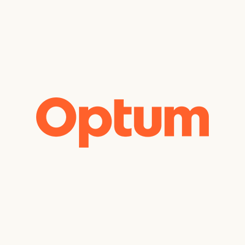

Software Engineer
Optum
July 2024 – PresentBuilding secure enterprise healthcare platforms on Microsoft Azure using a distributed architecture of 24 Azure Service Bus–driven microservices supporting provider claim processing, workflow orchestration, and cloud-native services.
Cloud Engineering
Developed enterprise applications using .NET, React, Azure, AKS, Azure SQL and APIM.
Security
Resolved 100+ vulnerabilities across secure coding, DAST, cloud configuration and penetration testing while supporting 4 engineering teams.
Automation
Increased automated regression testing from 0% to 70%+ using Cypress integrated into CI/CD pipelines.
DevSecOps
Automated Azure Key Vault secret rotation and modernized CI/CD using Terraform, GitHub Actions, OIDC, Managed Identity and Azure PIM.
Observability
Built monitoring and automated incident generation using Azure Monitor, Log Analytics, Power BI, Interlink and ServiceNow, reducing MTTR by 75%.
AI Engineering
Implemented Azure OpenAI, Azure AI Search, RAG, hallucination detection, bias evaluation and responsible AI guardrails.